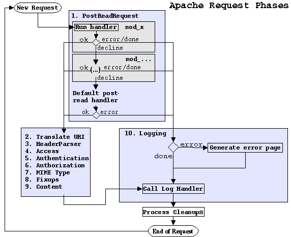
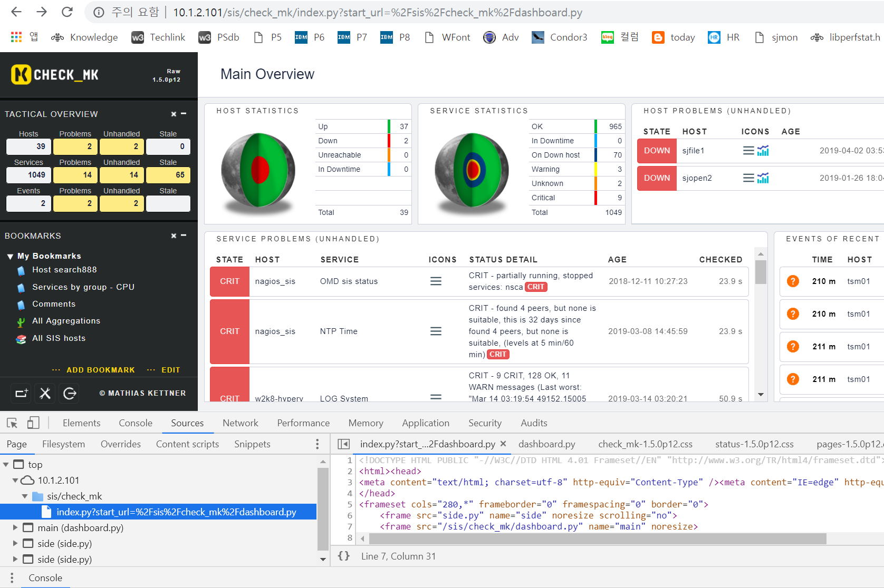
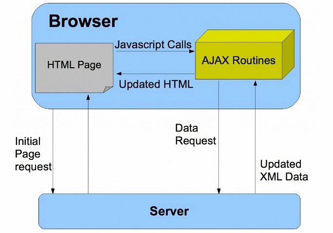
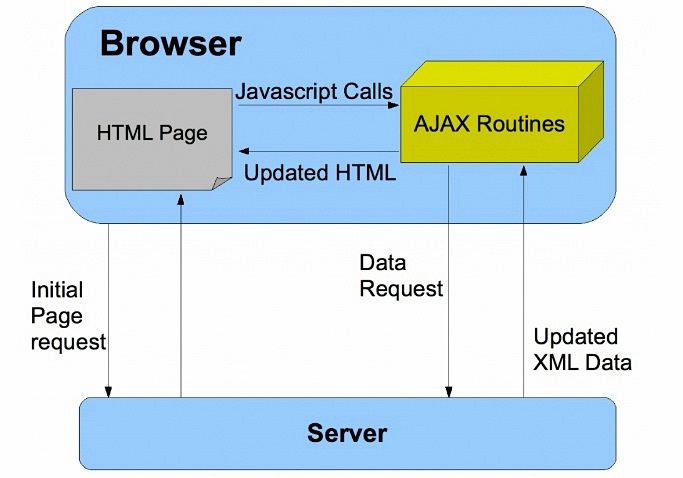

Check_MK 파이썬 홈페이지 구조 분석
Check_MK 화면은 Python, html, css, javascript, jquery, Ajax 등 다양한 기술이 사용되었다.
Python 은 서버 Site 에 사용되었고 HTML + CSS + JS 사용해서 브라우저에 동적인 Page 를 구현
n. CSS 사용예.
<link rel="stylesheet" type="text/css" href="mystyle.css">
n. javascript 사용예.
<script src="script.js"></script>
n. OMD 가 사용하는 Apache config file
- 실행중인 httpd 프로세스 옵션에서 apache config 파일 확인
- error_log 에서 mod_python/3.3.1 확인
ps -ef |grep http
sjopen 54273 30208 0 00:01 ? 00:00:11 /usr/sbin/httpd -f /omd/sites/sjopen/etc/apache/apache.conf
# cat /omd/sites/sjopen/var/log/apache/error_log
Apache/2.4.6 (CentOS) mod_python/3.3.1 Python/2.7.14 mod_fcgid/2.3.9 configured
n. apache.conf 설정 분석
# vi /omd/sites/sjopen/etc/apache/apache.conf
DocumentRoot "/omd/sites/sjopen/var/www" ==> Public document root, 실제 파일은 하나도 없음
Include /omd/sites/sjopen/etc/apache/listen-port.conf ==> Listen 127.0.0.1:5000
Include /omd/sites/sjopen/etc/apache/conf.d/*.conf ==> 추가적인 Configuration 파일들은 별도 파일에서 include
ls /omd/sites/sjopen/etc/apache/conf.d/*.conf
/omd/sites/sjopen/etc/apache/conf.d/01_python.conf ==> LoadModule python_module mod_python.so 파이썬 모듈 apache 에 로드
/omd/sites/sjopen/etc/apache/conf.d/02_fcgid.conf
/omd/sites/sjopen/etc/apache/conf.d/auth.conf ==> AuthUserFile /omd/sites/sjopen/etc/htpasswd
/omd/sites/sjopen/etc/apache/conf.d/check_mk.conf ==> Alias /sjopen/check_mk /omd/sites/sjopen/share/check_mk/web/htdocs, 메인 Site 설정
/omd/sites/sjopen/etc/apache/conf.d/cookie_auth.conf
/omd/sites/sjopen/etc/apache/conf.d/dokuwiki.conf
/omd/sites/sjopen/etc/apache/conf.d/icinga.conf
/omd/sites/sjopen/etc/apache/conf.d/nagios.conf
/omd/sites/sjopen/etc/apache/conf.d/nagvis.conf
/omd/sites/sjopen/etc/apache/conf.d/omd.conf
/omd/sites/sjopen/etc/apache/conf.d/pnp4nagios.conf
/omd/sites/sjopen/etc/apache/conf.d/site.conf
/omd/sites/sjopen/etc/apache/conf.d/stats.conf
/omd/sites/sjopen/etc/apache/conf.d/var_www.conf => Alias /sjopen "/omd/sites/sjopen/var/www" => public document root 설정
N. /omd/sites/sjopen/etc/apache/conf.d/*.conf 파일 분석
n. mod_python 모듈 Apache 에 추가하기
/omd/sites/sjopen/etc/apache/conf.d/01_python.conf
<IfModule !mod_python.c>
LoadModule python_module /omd/sites/sjopen/lib/apache/modules/mod_python.so
</IfModule>
# Mod_python is an Apache module that embeds the Python interpreter within the server.
n. mod_python 핸들러
- Apache는 일반적인 요청을 3단계 phase로 나줘서 처리한다. (1) translate the requested URI to a file location (2) read the file and send it to the client, then (3) log the request.
- Apache가 처리하는 하나의 단계를 "핸들러(handler)"라고 한다.
- 특별한 처리가 필요한 요청은 additional handler 를 통해서 처리할 수 있다.
- mod_python 자체는 아무것도 하지 않지만 Python* 으로 시작하고 Handler로 끝나는 설정을 통해서 원하는 동작을 할 수 있다.
- PythonHandler 는 이름이 없는 핸들러이며 generic handler 라고 부른다.
- AddHandler 설정은 .py 확장자로 끝나는 요청은 mod_python handler 로 처리해야 한다는 설정
- PythonHandler 설정은 /sjopen/check_mk/*.py 확장자로 들어오는 요청은 generic handler 처리를 index.py로 처리한다는 의미
- *.py 로 들어오는 요청은 index.py 내부 handler() 함수가 generic handler로써 호출하고 request object 를 전달한다.(파일 존재 여부와 관계없다)
- request object (req) 는 http 요청에 대한 모든 정보를 가지고 있다.(client IP, header, URI, etc)
 
n. mod_python 핸들러 설정(/sjopen/check_mk 경로에 대한)
/omd/sites/sjopen/etc/apache/conf.d/check_mk.conf
Alias /sjopen/check_mk /omd/sites/sjopen/share/check_mk/web/htdocs
<Directory /omd/sites/sjopen/share/check_mk/web/htdocs>
AddHandler mod_python .py ==> py로 끝나는 파일은 mod_python 으로 처리한다는 지시어
PythonHandler index ==> main request handler, index 모듈 임포트, index.py 모듈에서 handler 함수를 호출
(PythonHandler -> handler), handler 호출 및 request object 전달
PythonOption mod_python.importer.path "['/omd/sites/sjopen/local/share/check_mk/web/htdocs', '/omd/sites/sjopen/share/check_mk/web/htdocs']"
==> 모듈을 검색하는 순서, apache.import_module() function is called with just the name of the module.
DirectoryIndex index.py ==> 클라이언트가 디렉토리를 요청할때 찾아볼 자원
n. index.py 파일 handler 분석
(PythonHandler index 에 의해서 호출되는 파일)
/omd/sites/sjopen/share/check_mk/web/htdocs/index.py
#!/usr/bin/python
-*- encoding: utf-8; py-indent-offset: 4 -*-
# +------------------------------------------------------------------+
# | ____ _ _ __ __ _ __ |
# | / ___| |__ ___ ___| | __ | \/ | |/ / |
# | | | | '_ \ / _ \/ __| |/ / | |\/| | ' / |
# | | |___| | | | __/ (__| < | | | | . \ |
# | \____|_| |_|\___|\___|_|\_\___|_| |_|_|\_\ |
# | |
# +------------------------------------------------------------------+
from mod_python import apache
import sys, os, pprint, __builtin__ ==> 파이썬 표준 라이브러리에 포함된 모듈, __builtin__ module provides direct access to all‘built-in’identifiers of Python
import traceback ==> 파이썬 표준 라이브러리에 포함된 모듈
# Check_MK 에서 설치한 파이썬 모듈 및 함수들 임포트 (/omd/sites/sjopen/share/check_mk/web/htdocs 아래)
import i18n
import sites
import livestatus
import modules
import userdb
import config
import login
from lib import *
import log
from html_mod_python import html_mod_python, FinalizeRequest
import cmk.paths ==> /opt/omd/versions/1.5.0p13.cre/lib/python/cmk/paths.py
# Main entry point for all HTTP-requests (called directly by mod_apache)
def handler(mod_python_req, fields = None, is_profiling = False): ==> .py 핸들러가 호출하는 함수 handler ("PythonHandler" 에서 Python 빼고 "handler"가 호출됨)
# Create an object that contains all data about the request and
# helper functions for creating valid HTML. Parse URI and
# store results in the request object for later usage.
__builtin__.html = html_mod_python(mod_python_req, fields) ==> html 인스턴스 생성 html_mod_python 클래스 (html 클래스 상속)
response_code = apache.OK
try:
config.initialize() ==> multisite.mk 및 multisite.d/*.mk 불러옴(include)
init_profiling(is_profiling)
html.init_modes() ==> Initializes the operation mode of the html() object.
# Make sure all plugins are avaiable as early as possible. At least
# we need the plugins (i.e. the permissions declared in these) at the
# time before the first login for generating auth.php.
modules.load_all_plugins()
# Get page handler.
handler = modules.get_handler(html.myfile, page_not_found) ==> myfile(확장자 뺀 filename) 를 key로 딕셔너리에서 추출, 없으면 page_not_found
==> pagehandlers 딕셔너리는 다른 단계에서 색인해서 만드는것 같음
# Some pages do skip authentication. This is done by adding
# noauth: to the page hander, e.g. "noauth:run_cron" : ...
# TODO: Eliminate those "noauth:" pages. Eventually replace it by call using
# the now existing default automation user.
if handler == page_not_found: ==> page_not_found 발생하면 noauth 방식으로 재시도
handler = modules.get_handler("noauth:" + html.myfile, page_not_found)
if handler != page_not_found:
try:
handler() ==> URL 에서 호출한 핸들러 실행(EX: view)
except Exception, e:
html.write_text("%s" % e)
if config.debug:
html.write_text(traceback.format_exc())
raise FinalizeRequest()
<생략>
# All plugins might have to be reloaded due to a language change. Only trigger
# a second plugin loading when the user is really using a custom localized GUI.
# Otherwise the load_all_plugins() at the beginning of the request is sufficient.
if i18n.get_current_language() != previous_language:
modules.load_all_plugins()
ensure_general_access()
handler()
# Get page handler.
handler = modules.get_handler(html.myfile, page_not_found) ==> return pagehandlers.get(name, dflt)
<생략>
# Early initialization upon first start of the application by the server
def initialize():
init_sys_path()
log.init_logging() ==> web.log 에 기록하도록 logger를 초기화 하는 것 같음(/opt/omd/sites/sjopen/var/log/web.log)
modules.init_modules() ==> modules.py 모듈에 init_modules 펑션 정의됨: Loads all modules needed into memory and performs global initializations
# Run the global application initialization code here. It is called
# only once during the startup of the application server.
initialize()
# Early initialization 분석
index.py -> initialize() -> modules.py -> init_modules -> load_web_plugins('pages', globals()) -> lib.py -> load_web_plugins(forwhat, globalvars): -> "/plugins/pages" 파일을 execfile() 하는것같음(따로분석하자)
n. 접속화면 분석
/sjopen/check_mk/ 접속하면 자동으로 index.py 옵션으로 start_url=dashboard.py 호출됨

n. CSS 는 어떻게 불러오나?
- 브라우저에서 확인한 CSS 경로는 다음과 같다.
- 실제 파일 이름은 check_mk.css 인데 check_mk-1.4.0p33.css 로 변경되서 불러온다.
- 아래 모듈에서 css_filename_for_browser 함수에서 파일명에 버전 정보를 넣어서 반환 하는것 같다.
- css_filename_for_browser 함수는 htmllib.py 와 html_mod_python.py 2곳에서 정의되었다.
# vi /omd/sites/sjopen/share/check_mk/web/htdocs/html_mod_python.py
def css_filename_for_browser(self, css):
rel_path = "/share/check_mk/web/htdocs/" + css + ".css"
if os.path.exists(cmk.paths.omd_root + rel_path) or \
os.path.exists(cmk.paths.omd_root + "/local" + rel_path):
return '%s-%s.css' % (css, cmk.__version__)
/omd/sites/sjopen/share/check_mk/web/htdocs/html_mod_python.py
=> Request 를 분석하고 URL 분석해서 page name 확인하는 기능? We strip away the .py and get the name of the page., 모바일, degug
=> def javascript_filename_for_browser(self, jsname):
/omd/sites/sjopen/share/check_mk/web/htdocs/htmllib.py => HTML encoding, def html_head(), def body_start() HTML 문서 만드는 Class, 함수들
/omd/sites/sjopen/share/check_mk/web/htdocs/views.py
[root@dev93 htdocs]# ls -l *html*
-rw-r--r--. 1 root root 102263 May 17 2018 htmllib.py
-rw-r--r--. 1 root root 12250 May 17 2018 html_mod_python.py
What is Mod_python?
Apache module that embeds the Pyhton interpreter
Notepad++ 로 파이썬 개발 및 실행하기
mod_python 공식 온라인 메뉴얼
Mod python notes
Apache와 Python 연동하기(한글)
mod_python 핸들러 설명 > PythonHandler
파이썬 표준 라이브러리 - 어떤것이 있는지 찾아본다.
표준은 아니지만 쓸만한 파이썬 패키지 검색, Find, install and publish Python packages with the Python Package Index
설치는 pip, setuptools, wheel 사용
n. OMD public page 에서 mod_python 사용하도록 설정해보기 테스트 -> OK
vi /omd/sites/sjopen/etc/apache/conf.d/var_www.conf
Alias /sjopen "/omd/sites/sjopen/var/www"
<Directory /omd/sites/sjopen/var/www>
Options +Indexes +FollowSymlinks
# sjjslee 2019.04.10 for test
AddHandler mod_python .py
PythonHandler index
DirectoryIndex index.py
# sjlslee
</Directory>
n. mod_python 테스트 프로그램 -> OK
# vi /omd/sites/sjopen/var/www/index.py
from mod_python import apache # 모든 mod_python 프로그램 필요, 함수명 만으로 모듈내부 함수를 사용하도록 모듈 임포트
# mod_python 패키지의 apache 모듈, Apache interal 접근을 위한 인터페이스(mod_python manual)
def handler(req):
req.send_http_header()
req.write("Hello World!\n")
req.write("req.connection %s\n" % req.connection)
req.write("req.server %s\n" % req.server)
req.write("req.interpreter %s\n" % req.interpreter)
return apache.OK

https://wikidocs.net/29 => 모듈 사용법
Ajax(Asynchronous JavaScript and XML) 구조
 
n. index.py 파일 handler 분석
(PythonHandler index 에 의해서 호출되는 파일)
# vi /omd/sites/sjopen/share/check_mk/web/htdocs/index.py
from mod_python import apache
def handler(req): ==> 핸들러가 호출하는 함수 선언 ("PythonHandler " 에서 Python 빼고 "handler"가 호출됨)
req.content_type = "text/plain"
req.write("Hello World!")
return apache.OK
n. /sjopen/ 으로 요청하면 /site/omd/ 로 리다이렉트
/omd/sites/sjopen/etc/apache/conf.d/omd.conf
RewriteRule ^/sjopen/?$ %{ENV:proto}://%{SERVER_NAME}/sjopen/omd/ [R=302]
Alias /sjopen/omd "/omd/sites/sjopen/share/omd/htdocs"
<Directory "/omd/sites/sjopen/share/omd/htdocs">
<IfModule mod_python.c>
AddHandler mod_python .py
PythonHandler index
# Make sure each site uses it's own Python interpreter (module cache!)
PythonInterpreter sjopen
PythonDebug On
DirectoryIndex index.py
</IfModule>
Options FollowSymLinks
AllowOverride None
</Directory>
- Public Document 에 대한 설정
Alias /sjopen "/omd/sites/sjopen/var/www" ==> 이 디렉토리에는 파일이 하나도 없음
- 결국 check_mk URL을 호출하면 apache는 아래의 index.py 파일을 실행해서 Client 요청을 처리한다.